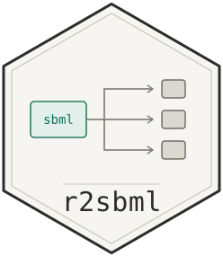

Limitations and unimplemented behaviour
Source:vignettes/limitations.Rmd
limitations.RmdThis vignette is the honest inventory: what r2sbml does
not do, what it does only partially, and — the part that matters most in
practice — which of those gaps announce themselves and which do
not.
Read vignette("r2sbml", package = "r2sbml") first for
how the package is meant to be used.
library(r2sbml)
ex <- function(f) system.file("examples", f, package = "r2sbml")The single most important table
Generated code that fails loudly is a nuisance. Generated code that runs and quietly returns the wrong numbers is a hazard. Here is where each limitation falls:
| Limitation | How you find out |
|---|---|
| Algebraic rules in mrgsolve / rxode2 / ubiquity | R warning + comment in the file |
| Algebraic rules that do not form a square system | R warning + comment |
| Dilution for an assignment-rule compartment | R warning |
Constructs with no ubiquity spelling (incl. delay) |
R warning + # WARNING block in the
file |
delay in the other five targets |
silent — code fails at run time |
| Events | silent — a count in the header comment only |
Two-argument log(b, x) in R and MATLAB |
silent — wrong answer |
root, piecewise, factorial,
% in some targets |
silent — untested |
getSpeciesIC() on an amount-based model |
silent — returns NaN
|
getSpeciesNames() when no name attribute
is set |
silent — returns ""
|
| Inconsistent initial conditions for a DAE | solver error, not mentioning SBML |
| A semantically invalid model | silent — nothing is validated |
Everything below expands on these.
Scope: reading and exporting only
r2sbml has no setter API. You cannot change a species’
initial value, add a reaction, or write SBML back out. There is no
setSpecies(), no writeSBML(), and
getModel() returns an opaque external pointer rather than
an R-side object you could edit.
If you need to modify models programmatically, use libSBML’s own R
bindings or edit the XML directly. r2sbml is for inspecting
a model and getting simulation code out of it.
Per-target capability matrix
| Feature | deSolve | mrgsolve | rxode2 | MATLAB | Julia | ubiquity |
|---|---|---|---|---|---|---|
| Rate rules / reactions | yes | yes | yes | yes | yes | yes |
| Assignment rules | yes | yes | yes | yes | yes | yes |
| Boundary / constant species | yes | yes | yes | yes | yes | yes |
| Initial-condition unit conversion | yes | yes | yes | yes | yes | yes |
| Algebraic rules (as a DAE) | yes | no | no | yes | yes | no |
| Compartment with a rate rule | yes | yes | yes | yes | yes | yes |
| Compartment dilution term | yes | yes | yes | yes | yes | yes |
| Compartment with an assignment rule | partial | partial | partial | partial | partial | partial |
delay |
no | no | no | no | no | no |
| Events | no | no | no | no | no | no |
| Exponentiation spelling | ^ |
pow() |
^ |
^ |
^ |
SIMINT_POWER |
“partial” for an assignment-rule compartment means the volume itself is correct but the dilution term is missing; see below.
Algebraic rules
An algebraic rule is a constraint 0 = f(...), not a
derivative, so a model carrying one is a differential-algebraic system
rather than an ODE.
Where a DAE is emitted
deSolve, MATLAB and Julia can each solve one, and r2sbml
emits a real DAE for them — a daspk residual function, or a
singular mass matrix. That path is demonstrated in the main vignette.
The constraint is genuinely enforced:
out <- tempfile(fileext = ".R")
convertReactions(ex("sbmlalgebraicrules.xml"), out, format = "R")
#> Conversion completed.
#> Number of ODEs - 4
env <- new.env(); source(out, local = env)
d <- as.data.frame(deSolve::daspk(y = env$InitialAmounts, dy = env$InitialDerivatives,
times = seq(0, 10, by = 2), res = env$massBalances,
parms = env$parameters))
max(abs(d$E + d$ES - d$E_total)) # constraint residual, ~1e-13
#> [1] 1.511014e-13Where it is not
mrgsolve, rxode2 and ubiquity integrate ODEs only. There the rule is written out as a comment, the species it constrains is left at a zero derivative, and a warning is raised:
tryCatch(
invisible(capture.output(convertReactions(ex("sbmlalgebraicrules.xml"),
tempfile(), format = "mrgsolve"))),
warning = function(w) cat(conditionMessage(w), "\n")
)
#> mrgsolve cannot enforce the 2 algebraic rule(s) in this model. They are written out as comments, and the species they constrain are left at a zero derivative, so the generated code runs but does not honour the constraint.There is no fix short of solving the constraint symbolically for its variable and emitting that as an assignment, which only works where such a solution exists and is unique.
The square-system requirement
SBML does not record which variable a given algebraic rule
determines, and libSBML exposes no matching for it. r2sbml
works out the candidate set instead — a species that is not constant and
carries neither a rate rule nor an assignment rule is undetermined, and
the specification requires the algebraic rules to determine exactly
those.
A DAE is emitted only when those two counts agree. If they differ,
the model is over- or under-determined as far as this heuristic can
tell, and rather than guess, r2sbml falls back to comments
and warns. A proper bipartite matching over the variables each rule
references would widen the set of models that qualify; that is not
implemented.
Consistent initial conditions are assumed, not checked
A DAE has to start on the constraint manifold.
sbmlalgebraicrules.xml happens to. A model that does not
will fail inside the solver — daspk cannot find consistent
initial conditions, ode15s rejects the initial state — and
the error will not mention SBML or r2sbml,
which makes it hard to trace back to the model.
daspk’s estini argument can estimate
consistent values, but it requires the algebraic equations to come last
in the residual vector, which the current row ordering does not
guarantee.
delay
SBML’s delay csymbol passes through unchanged into every
target:
out <- tempfile(fileext = ".R")
invisible(capture.output(convertReactions(ex("sbmldelay.xml"), out, format = "R")))
grep("delay", readLines(out), value = TRUE)
#> [1] " dP_dt = (1 / (1 + m * delay(P, delta_t)^q) - P) / tau"delay() is not a function in base R, in C++, in MATLAB
or in Julia, so this code does not run anywhere. A delay-differential
equation needs a different solver interface entirely —
deSolve::lagvalue() for R, and the equivalent per
target.
Only the ubiquity writer notices:
tryCatch(
invisible(capture.output(convertReactions(ex("sbmldelay.xml"),
tempfile(), format = "ubiquity"))),
warning = function(w) cat(conditionMessage(w), "\n")
)
#> ubiquity has no equivalent for: delay. They were written out unchanged and the system file will not build until they are replaced.For the other five targets this is silent.
sbmldelay.xml is the one example model whose generated
deSolve, mrgsolve, rxode2, MATLAB and Julia output will not run.
Events
Events are not exported at all. They survive as a number in the header comment and nothing else:
out <- tempfile(fileext = ".R")
invisible(capture.output(convertReactions(ex("sbmlevent.xml"), out, format = "R")))
grep("events", readLines(out), value = TRUE)
#> [1] "## events: 2"sbmlevent.xml has two events, and neither appears in the
generated code. The simulation will run — and will silently ignore every
trigger, delay and event assignment in the model.
You can still inspect them from R:
getEventMath(getModel(ex("sbmlevent.xml")))
#>
#> filename: /home/runner/work/_temp/Library/r2sbml/examples/sbmlevent.xml
#> error(s): 0
#>
#>
#> File: /home/runner/work/_temp/Library/r2sbml/examples/sbmlevent.xml (Level 3, version 2)
#> Event 0 trigger: P1 > tau
#> EventAssignment 1, trigger: G2 = 1
#> Event 1 trigger: P1 <= tau
#> EventAssignment 1, trigger: G2 = 0
#> [1] 0Translating them would mean mapping SBML triggers onto each target’s
own mechanism — deSolve’s events/roots,
mrgsolve’s $EVENT, and so on — which differ enough that
there is no shared representation to generate from.
Compartments whose volume changes
A compartment with a rate rule is fully handled: it
joins the state vector, and every species inside it gains the dilution
term -[S] * (dV/dt) / V that follows from
[S] = n/V. The main vignette works through an example.
A compartment with an assignment rule is only partly
handled. The volume itself is correct — it is recomputed in the
right-hand side like any other assignment rule — but the dilution term
cannot be formed, because that needs dV/dt, i.e. a symbolic
time derivative of the assignment expression, chain rule and all. Every
writer warns:
assigned <- tempfile(fileext = ".xml")
writeLines('<?xml version="1.0" encoding="UTF-8" ?>
<sbml xmlns="http://www.sbml.org/sbml/level3/version2/core" level="3" version="2">
<model substanceUnits="mole" volumeUnits="litre" timeUnits="second" extentUnits="mole">
<listOfCompartments>
<compartment id="c" size="1" spatialDimensions="3" constant="false"/>
</listOfCompartments>
<listOfSpecies>
<species id="A" compartment="c" initialConcentration="2" boundaryCondition="false"
hasOnlySubstanceUnits="false" constant="false"/>
</listOfSpecies>
<listOfParameters>
<parameter id="g" value="1" constant="true"/>
</listOfParameters>
<listOfRules>
<assignmentRule variable="c">
<math xmlns="http://www.w3.org/1998/Math/MathML">
<apply><plus/><cn>1</cn><ci>g</ci></apply></math>
</assignmentRule>
</listOfRules>
</model>
</sbml>', assigned)
tryCatch(
invisible(capture.output(convertReactions(assigned, tempfile(), format = "R"))),
warning = function(w) cat(conditionMessage(w), "\n")
)
#> Compartment(s) c follow an assignment rule, so deSolve receives the right volume but no dilution term for the species inside them. d[S]/dt is missing -[S]*(dV/dt)/V, which needs a symbolic time derivative of the rule.Events that change a compartment size are not handled either, for the same reason events in general are not.
Mathematics with no spelling in the target language
None of the following is exercised by the example models, so all of it is reasoned-correct rather than tested. All of it is silent.
Two-argument logarithms. The SBML Level 3 writer
emits log(b, x) meaning “log of x to base
b”. That is correct Julia. It is reversed in R,
where log(x, base) takes the value first, and invalid in
MATLAB, which has no two-argument log. Only the ubiquity
writer rewrites it, as a ratio of SIMINT_LOGN calls. A
model using log(b, x) will produce R code that runs and
returns wrong numbers.
Other constructs. root(n, x),
piecewise(...), exponentiale,
factorial in the C++ target, and the % modulo
operator, whose spelling differs across R, C++ and MATLAB.
Logical and relational operators in MATLAB.
formulaToInfixMatlab() rewrites ! to
~ and != to ~=. No example model
contains a logical operator, so that rewrite has never actually run
against a real model.
ubiquity’s unsupported list.
ubiquityUnsupported() reports the constructs named in the
ubiquity documentation — root, piecewise,
factorial, delay, or,
not, xor. Anything outside that list, the
trigonometric functions in particular, falls into a generic named-call
path: it is emitted as a plain call and reported by name if it cannot be
resolved, rather than being caught up front.
Why this matters more for ubiquity than elsewhere:
build_system() accepts a file containing an unknown call,
and the failure surfaces much later as a C compile error naming a shared
object, with nothing pointing back at the model. Hence the
# WARNING block written into the file itself as well as the
R warning.
No validation is performed
getModel() stops if libSBML reports a problem while
reading the file, but reading is not validation. Neither
getModel() nor convertReactions() runs a
consistency check, so a model that loads cleanly may still be
semantically invalid — inconsistent units, an overdetermined system, a
species referenced before it is defined.
If you need validation, run it through libSBML’s own validator or the
online SBML validator first.
r2sbml assumes the model it is given is a correct one.
Quirks of the query functions
These are not code-generation issues; they affect the inspection API.
getSpeciesIC() returns NaN for
amount-based models
It reads initialConcentration only. A species carries
initialAmount or
initialConcentration, never both, and the unset one reads
back as NaN:
model <- getModel(ex("sbmlsimple.xml"))
#>
#> filename: /home/runner/work/_temp/Library/r2sbml/examples/sbmlsimple.xml
#> error(s): 0
#>
#>
#> File: /home/runner/work/_temp/Library/r2sbml/examples/sbmlsimple.xml (Level 3, version 2)
getSpeciesIC(model)
#> [1] NaN NaN NaN NaNAll four species in sbmlsimple.xml set
initialAmount, so every value comes back NaN.
getSpeciesTable() is the reliable alternative — it reports
both columns, so you can see which one is populated:
getSpeciesTable(model)[, c("ID", "InitialConcentration", "InitialAmount")]
#> ID InitialConcentration InitialAmount
#> 1 E NaN 5e-21
#> 2 S NaN 1e-20
#> 3 P NaN 0e+00
#> 4 ES NaN 0e+00Note that convertReactions() is not
affected by this: it uses a separate helper that takes whichever
attribute is set and converts between amount and concentration using the
compartment volume. The inconsistency is confined to
getSpeciesIC().
getSpeciesNames() returns the name
attribute, which is usually empty
getSpeciesNames(model)
#> [1] "" "" "" ""SBML distinguishes id (a required identifier) from
name (an optional human label). None of the ten example
models sets name, so this returns empty strings for all of
them. Use getSpeciesTable()$ID when you want
identifiers.
Compartments are inconsistent with this: getCmtNames()
returns the id, not the name.
getCmtNames(model)
#> comp
#> [1] "comp"Absent components raise an error whose message is uninformative
getRuleMath(model) # sbmlsimple.xml has no rules
#> No Rules present in the model.
#> Error:
#> ! Stopping!The useful line goes to the console; the condition message is only
"Stopping!". Code that catches the error cannot distinguish
“no rules” from “no parameters” from any other empty-component case
without also capturing stdout.
Things that are correct but easy to misread
NaN in getSpeciesTable() is not a
bug. It marks the attribute the model did not set.
Console output is not part of the return value.
getRuleMath() and friends return 0 invisibly
and print their content, so x <- getRuleMath(m) gives
you 0. Use capture.output().
Compartment volumes are constants in the generated code — when the model says they are constant. That is not the volume being ignored.
ubiquity bounds are -inf inf.
Deliberate: an SBML value may be zero or negative, and a lower bound
above the value would be inconsistent. They matter only for parameter
estimation.
The generated header comment counts model components, including ones that were expanded away (function definitions, initial assignments) or not exported (events). It describes the SBML file, not the generated code.
Generated code is a starting point
Even where everything above is satisfied, treat the output as a first draft:
- The time span is a placeholder —
[0 10]for MATLAB,(0.0, 10.0)for Julia, and nothing at all for the R targets, which leave the call to you. - Solver tolerances are defaults, and no target’s generated code sets
them. Some models are stiff enough to need tuning:
sbmlmutlicompartment.xml(rate constants from 2500 to 25000) integrates cleanly tot = 1withdeSolve’s defaults but exhaustslsoda’s step budget beforet = 5, returning early with a warning rather than an error. - No unit checking is performed.
r2sbmlconverts initial conditions between amount and concentration using compartment volume, but it does not verify that the model’s declared units are mutually consistent, and it does not convert between, say, millilitres and litres. - Conversion factors are applied by libSBML’s converter, not by
r2sbml, and are only as correct as that converter.
Where these are tracked
The package keeps todo.md in its source repository
recording each known gap along with how it was found, so a claim here
can be checked against the reasoning behind it before anyone acts on it.
The test suite covers every limitation that has a defined behaviour —
the warnings, the fallbacks, and the closed-form solutions used to
verify the DAE and dilution paths.